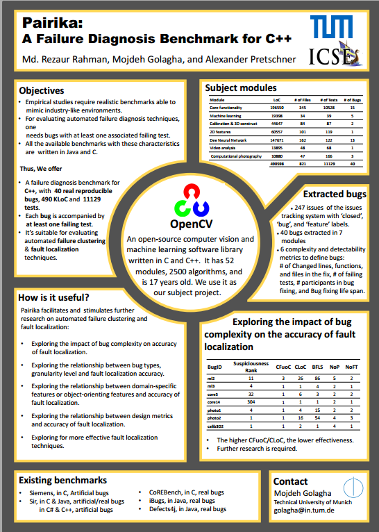
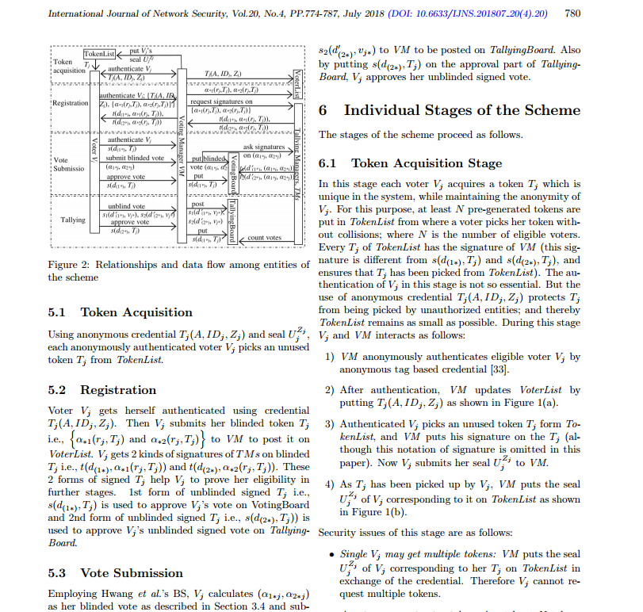

|

|
Pairika: A Failure Diagnosis Benchmark for C++ Programs.
Md Rezaur Rahman, Mojdeh Golagha, and Alexander Pretschner.
International Conference on Software Engineering (ICSE), Gothenburg, Sweden, 2018.
Abstract: We presents Pairika, a failure diagnosis benchmark for C++ programs.
Pairika contains 40 bugs extracted from seven modules of OpenCV project with more than 490 KLoC and 11129 tests.
Each bug is accompanied by at least one failing test. We publish Pairika to facilitate and stimulate further research on
automated failure diagnosis techniques.
[pdf]
[Project Wiki]
[GitHub]
|
|

|
An Untraceable Voting Scheme Based on Pairs of Signatures.
K. M. Rokibul Alam, Adnan Maruf, Md Rezaur Rahman, G. G. Md. Nawaz Ali, Peter H. J. Chong, and Y. Morimoto.
International Journal of Network Security (IJNS), Vol 20, No. 4, pp. 774-787, 2018.
Abstract: We proposed a novel e-voting scheme that leverages two pairs of signatures of signing (election)
authorities. One pair of signatures on each voter’s same blinded token enables to anonymously appear to authorities in
consecutive election stages. The other signature pair on voter’s blinded vote qualify the authorities
to prevent deception from voters.
[pdf]
|